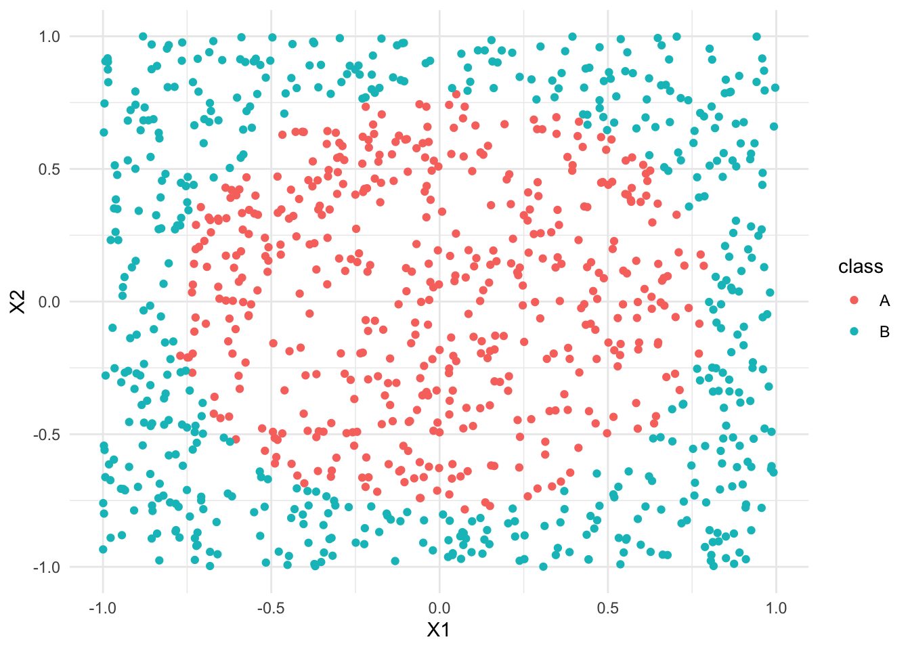
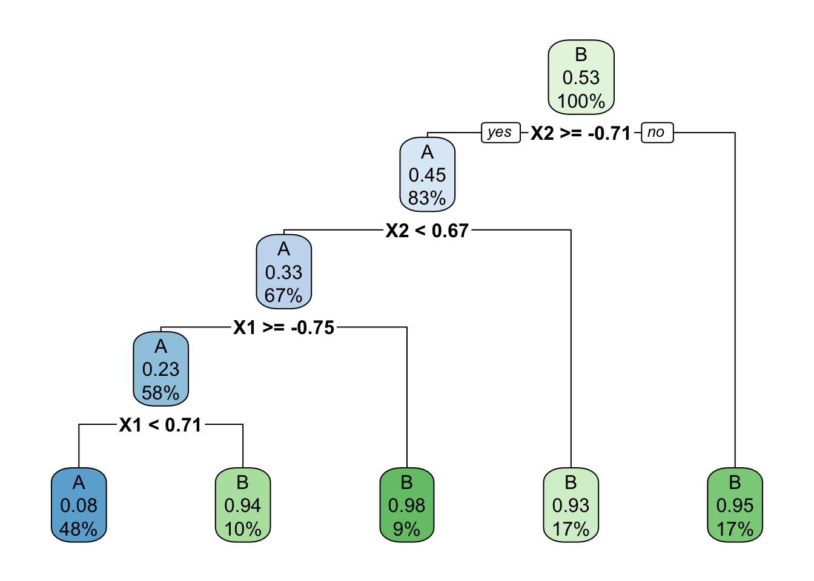
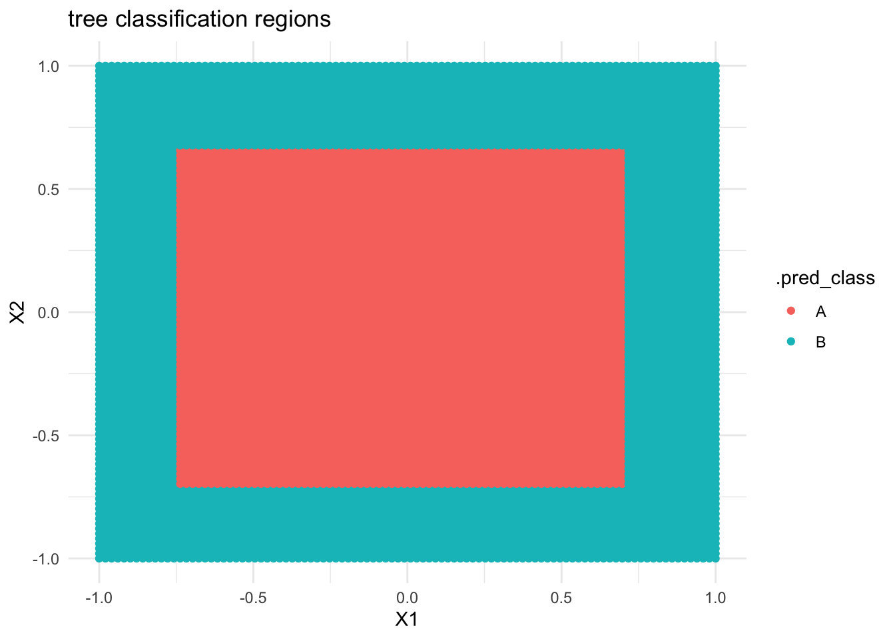
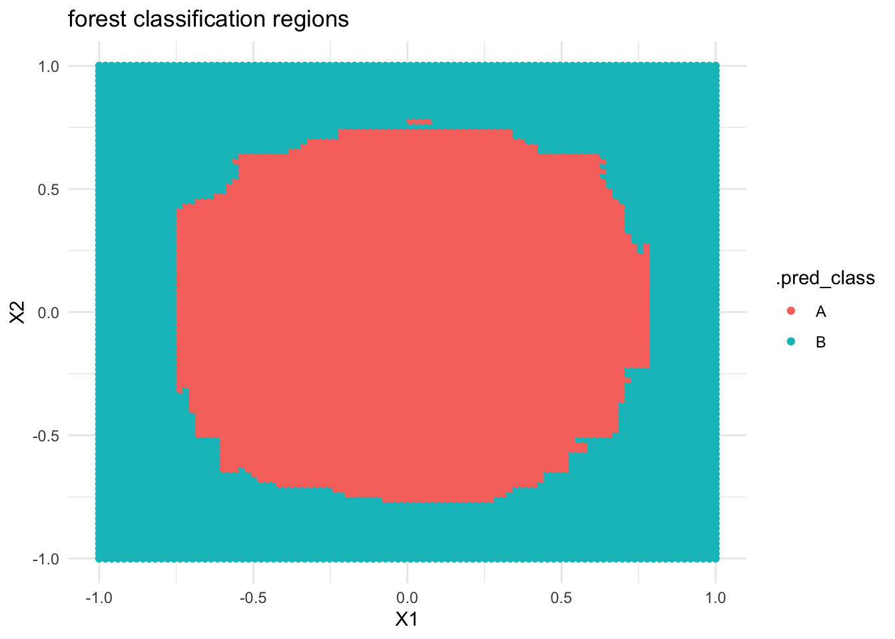

Random forests & bagging
Context

Within the broader machine learning landscape, we left off by discussing supervised classification techniques:
- build a model of categorical variable y by predictors x
- parametric model: logistic regression
- nonparametric models: KNN & trees
- evaluate the model
We can use CV & in-sample techniques to estimate the accuracy of our classification models.- for binary y: sensitivity, specificity, ROC curves
- for y with any number of categories: overall accuracy rates, category specific accuracy rates
TODAY’S GOAL
Add more nonparametric algorithms to our toolkit: random forests & bagging
EXAMPLE 1: Anticipation
What does the word “forest” mean to you?

EXAMPLE 3: Build an unpruned tree
For demonstration purposes only let’s:
- define a
popularityvariable that categorizes the candies as “low”, “medium”, or “high” popularity - delete the original
winpercentvariable - rename variables to make them easier to read in a tree
- make the candy name a row label, not a predictor
candy <- candy_rankings %>%
mutate(popularity = cut(winpercent, breaks = c(0, 40, 60, 100), labels = c("low", "med", "high"))) %>%
select(-winpercent) %>%
rename("price" = pricepercent, "sugar" = sugarpercent, "nutty" = peanutyalmondy, "wafer" = crispedricewafer) %>%
column_to_rownames("competitorname")Our goal is to model candy popularity by all possible predictors in our data.
# STEP 1: tree specification
tree_spec <- decision_tree() %>%
set_mode("classification") %>%
set_engine(engine = "rpart") %>%
set_args(cost_complexity = 0, min_n = 2, tree_depth = 30)
# STEP 2: Build the tree! No tuning (hence no workflows) necessary.
original_tree <- tree_spec %>%
fit(popularity ~ ., data = candy)
# Plot the tree
original_tree %>%
extract_fit_engine() %>%
plot(margin = 0)
original_tree %>%
extract_fit_engine() %>%
text(cex = 0.7)
Ideally, our classification algorithm would have both low bias and low variance:
- low variance = the results wouldn’t change much if we changed up the data set
- low bias = within any data set, the predictions of y tend to have low error / high accuracy
Unfortunately, like other overfit algorithms, unpruned trees don’t enjoy both of these. They have…
- low bias, low variance
- low bias, high variance
- high bias, low variance
- high bias, high variance
Solution:
low bias, high variance
- Tuning parameters (challenge)
Our random forest of popularity by all 11 possible predictors will depend upon 3 tuning parameters:
trees= the number of trees in the forestmtry= number of predictors to randomly choose & consider at each splitmin_n= minimum number of data points in any leaf node of any tree
Check your intuition.
- Does increasing the number of
treesmake the forest algorithm more or less variable from dataset to dataset? - We have 11 possible predictors, and sqrt(11) is roughly 3. Recall: Would considering just 3 randomly chosen predictors in each split (instead of all 11) make the forest algorithm more or less variable from dataset to dataset?
- Recall that using unpruned trees in our forest is important to maintaining low bias. Thus should
min_nbe small or big?
Solution:
- less variable (less impacted by “unlucky” trees)
- less variable
- small
- Build the forest
Given that forests are relatively computationally expensive, we’ll only build one forest using the following tuning parameters:
mtry = NULL: this setsmtryto the default, which is sqrt(number of predictors)trees = 500min_n = 2
Fill in the below code to run this forest algorithm.
# There's randomness behind the splits!
set.seed(253)
# STEP 1: Model Specification
rf_spec <- rand_forest() %>%
set_mode("___") %>%
___(engine = "ranger") %>%
___(
mtry = NULL,
trees = 500,
min_n = 2,
probability = FALSE, # Report classifications, not probability calculations
importance = "impurity" # Use Gini index to measure variable importance
)
# STEP 2: Build the forest
# There are no preprocessing steps or tuning, hence no need for a workflow!
candy_forest <- ___ %>%
fit(___, ___)Solution:
# There's randomness behind the splits!
set.seed(253)
# STEP 1: Model Specification
rf_spec <- rand_forest() %>%
set_mode("classification") %>%
set_engine(engine = "ranger") %>%
set_args(
mtry = NULL,
trees = 500,
min_n = 2,
probability = FALSE, # give classifications, not probability calculations
importance = "impurity" # use Gini index to measure variable importance
)
# STEP 2: Build the forest
# There are no preprocessing steps or tuning, hence no need for a workflow!
candy_forest <- rf_spec %>%
fit(popularity ~ ., data = candy)- Use the forest for prediction
Use the forest to predict thepopularitylevel for Baby Ruth. (Remember that its realpopularityis “med”.)
- Evaluating forests: concepts
But how good is our forest at classifying candy popularity?
To this end, we could evaluate 3 types of forest predictions.
- Why don’t in-sample predictions, i.e. asking how well our forest classifies our sample candies, give us an “honest” assessment of our forest’s performance?
- Instead, suppose we used 10-fold cross-validation (CV) to estimate how well our forest classifies new candies. In this process, how many total trees would we need to construct?
- Alternatively, we can estimate how well our forest classifies new candies using the out-of-bag (OOB) error rate. Since we only use a resample of data points to build any given tree in the forest, the “out-of-bag” data points that do not appear in a tree’s resample are natural test cases for that tree. The OOB error rate tracks the proportion or percent of these out-of-bag test cases that are misclassified by their tree. How many total trees would we need to construct to calculate the OOB error rate?
- Moving forward, we’ll use OOB and not CV to evaluate forest performance. Why?
Solution:
- they use the same data we used to build the forest
- 10 forests
*500 trees each = 5000 trees - 1 forest
*500 trees = 500 trees - it’s much more computationally efficient
- Evaluating forests: implementation
- Report and interpret the estimated
OOB prediction error.
parsnip model object
Ranger result
Call:
ranger::ranger(x = maybe_data_frame(x), y = y, num.trees = ~500, min.node.size = min_rows(~2, x), probability = ~FALSE, importance = ~"impurity", num.threads = 1, verbose = FALSE, seed = sample.int(10^5, 1))
Type: Classification
Number of trees: 500
Sample size: 85
Number of independent variables: 11
Mtry: 3
Target node size: 2
Variable importance mode: impurity
Splitrule: gini
OOB prediction error: 40.00 % - The test or OOB confusion matrix provides more detail. Use this to confirm the OOB prediction error from part a. HINT: Remember to calculate error (1 - accuracy), not accuracy.
# NOTE: t() transposes the confusion matrix so that
# the columns and rows are in the usual order
candy_forest %>%
extract_fit_engine() %>%
pluck("confusion.matrix") %>%
t() true
predicted low med high
low 8 6 1
med 15 29 6
high 2 4 14Which level of candy popularity was least accurately classified by our forest?
Check out the in-sample confusion matrix. In general, are the in-sample predictions better or worse than the OOB predictions?
# The cbind() includes the original candy data
# alongside their predicted popularity levels
candy_forest %>%
predict(new_data = candy) %>%
cbind(candy) %>%
conf_mat(
truth = popularity,
estimate = .pred_class
) Truth
Prediction low med high
low 18 0 0
med 6 39 2
high 1 0 19Solution:
- We expect our forest to misclassify roughly 40% of new candies.
- .
# APPROACH 1: # of MISclassifications / total # of classifications
(6 + 1 + 15 + 6 + 2 + 4) / (8 + 29 + 14 + 6 + 1 + 15 + 6 + 2 + 4) [1] 0.4# APPROACH 2: overall MISclassification rate = 1 - overall accuracy rate
# overall accuracy rate
(8 + 29 + 14) / (8 + 29 + 14 + 6 + 1 + 15 + 6 + 2 + 4) [1] 0.6[1] 0.4- low (more were classified as “med” than as “low”)
- much better!
- Variable importance
Variable importance metrics, averaged over all trees, measure the strength of the 11 predictors in classifying candy popularity:
# Print the metrics
candy_forest %>%
extract_fit_engine() %>%
pluck("variable.importance") %>%
sort(decreasing = TRUE) sugar price chocolate fruity nutty wafer pluribus bar
9.4075750 9.0830343 5.0757837 2.8236876 2.2084982 2.1255274 1.8596475 1.8143452
caramel hard nougat
1.6918086 1.3640697 0.9441936 
- If you’re a candy connoisseur, does this ranking make some contextual sense to you?
- The only 2 quantitative predictors,
sugarandprice, have the highest importance metrics. This could simply be due to their quantitative structure: trees tend to favor predictors with lots of unique values. Explain. HINT: A tree’s binary splits are identified by considering every possible cut / split point in every possible predictor.
Solution:
- will vary
- predictors with lots of unique values have far more possible split points to choose from
- Classification regions
Just like any classification model, forests divide our data points into classification regions.
Let’s explore this idea using some simulated data that illustrate some important contrasts.1
Import and plot the data:
# Import data
simulated_data <- read.csv("https://kegrinde.github.io/stat253_coursenotes/data/circle_sim.csv") %>%
mutate(class = as.factor(class))
# Plot data
ggplot(simulated_data, aes(y = X2, x = X1, color = class)) +
geom_point() +
theme_minimal()
- Below is a classification tree of
classbyX1andX2. What do you think its classification regions will look like?
# Build the (default) tree
circle_tree <- decision_tree() %>%
set_mode("classification") %>%
set_engine(engine = "rpart") %>%
fit(class ~ ., data = simulated_data)
circle_tree %>%
extract_fit_engine() %>%
rpart.plot()
- Check your intuition. Were you right?
# THIS IS ONLY DEMO CODE.
# Plot the tree classification regions
examples <- data.frame(X1 = seq(-1, 1, len = 100), X2 = seq(-1, 1, len = 100)) %>%
expand.grid()
circle_tree %>%
predict(new_data = examples) %>%
cbind(examples) %>%
ggplot(aes(y = X2, x = X1, color = .pred_class)) +
geom_point() +
labs(title = "tree classification regions") +
theme_minimal()
If we built a forest model of
classbyX1andX2, what do you think the classification regions will look like?Check your intuition. Were you right?
# THIS IS ONLY DEMO CODE.
# Build the forest
circle_forest <- rf_spec %>%
fit(class ~ ., data = simulated_data)
# Plot the tree classification regions
circle_forest %>%
predict(new_data = examples) %>%
cbind(examples) %>%
ggplot(aes(y = X2, x = X1, color = .pred_class)) +
geom_point() +
labs(title = "forest classification regions") +
theme_minimal()
- Reflect on what you’ve observed here!
Solution:
- …
# THIS IS ONLY DEMO CODE.
# Plot the tree classification regions
examples <- data.frame(X1 = seq(-1, 1, len = 100), X2 = seq(-1, 1, len = 100)) %>%
expand.grid()
circle_tree %>%
predict(new_data = examples) %>%
cbind(examples) %>%
ggplot(aes(y = X2, x = X1, color = .pred_class)) +
geom_point() +
labs(title = "tree classification regions") +
theme_minimal()
- …
# THIS IS ONLY DEMO CODE.
# Build the forest
circle_forest <- rf_spec %>%
fit(class ~ ., data = simulated_data)
# Plot the tree classification regions
circle_forest %>%
predict(new_data = examples) %>%
cbind(examples) %>%
ggplot(aes(y = X2, x = X1, color = .pred_class)) +
geom_point() +
labs(title = "forest classification regions") +
theme_minimal()
- Forest classification regions are less rigid / boxy than tree classification regions.
If you finish early
Do one of the following:
- Check out the optional “Deeper learning” section below on another ensemble method: boosting.
- Check out group assignment 2 on Moodle. Next class, your group will pick what topic to explore.
- Work on homework.
Notes: R code
Suppose we want to build a forest or bagging algorithm of some categorical response variable y using predictors x1 and x2 in our sample_data.
Make sure that y is a factor variable
Build the forest / bagging model
We’ll typically use the following tuning parameters:
trees= 500 (the more trees we use, the less variable the forest)min_n= 2 (the smaller we allow the leaf nodes to be, the less pruned, hence less biased our forest will be)mtry- for forests:
mtry = NULL(the default) will use the “floor”, or biggest integer below, sqrt(number of predictors) - for bagging: set
mtryto the number of predictors
- for forests:
# STEP 1: Model Specification
rf_spec <- rand_forest() %>%
set_mode("classification") %>%
set_engine(engine = "ranger") %>%
set_args(
mtry = ___,
trees = 500,
min_n = 2,
probability = FALSE, # give classifications, not probability calculations
importance = "impurity" # use Gini index to measure variable importance
)
# STEP 2: Build the forest or bagging model
# There are no preprocessing steps or tuning, hence no need for a workflow!
ensemble_model <- rf_spec %>%
fit(y ~ x1 + x2, data = sample_data)
Use the model to make predictions / classifications
Examine variable importance
# Print the metrics
ensemble_model %>%
extract_fit_engine() %>%
pluck("variable.importance") %>%
sort(decreasing = TRUE)
# Plot the metrics
# Plug in the number of top predictors you wish to plot
# (The upper limit varies by application!)
library(vip)
ensemble_model %>%
vip(geom = "point", num_features = ___)
Evaluate the classifications
# Out-of-bag (OOB) prediction error
ensemble_model
# OOB confusion matrix
ensemble_model %>%
extract_fit_engine() %>%
pluck("confusion.matrix") %>%
t()
# In-sample confusion matrix
ensemble_model %>%
predict(new_data = sample_data) %>%
cbind(sample_data) %>%
conf_mat(
truth = y,
estimate = .pred_class
)